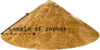

repose_angle

Definition: The angle of repose, or critical angle of repose, of a granular material is the steepest angle of descent or dip relative to the horizontal plane on which the material can be piled without slumping. At this angle, the material on the slope face is on the verge of sliding. The angle of repose can range from 0° to 90°. The morphology of the material affects the angle of repose; smooth, rounded sand grains cannot be piled as steeply as can rough, interlocking sands. The angle of repose can also be affected by additions of solvents. If a small amount of water is able to bridge the gaps between particles, electrostatic attraction of the water to mineral surfaces increases the angle of repose, and related quantities such as the soil strength.
Source: Wikipedia
Wikipedia Page (Something wrong with this association? Let us know.)
Wikidata Page (Something wrong with this association? Let us know.)
Occurs in: